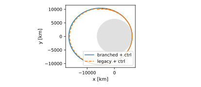
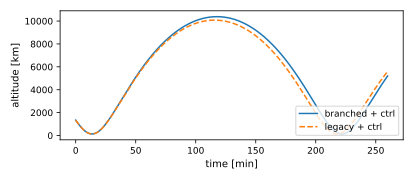
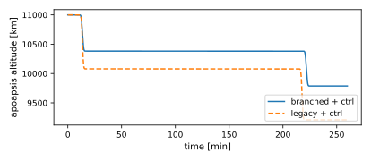
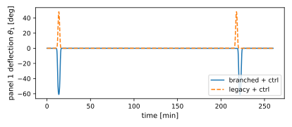
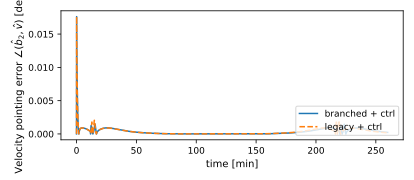
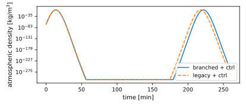

scenarioAerobrake
Overview
This scenario demonstrates effector branching for facet drag dynamic effectors attached to two hinged solar-panel state effectors on an aerobraking spacecraft. See Advanced: Effector Module Branching for the conceptual background on attaching dynamic effectors onto state effectors. The orbit is strongly elliptical about Earth, with a periapsis that dips into dense atmosphere on each pass. The configuration takes its cue from NASA’s Magellan aerobraking campaign at Venus, which used asymmetric solar-panel tilting to control drag, rather than reproducing that mission’s orbit.
The hub carries six cube facets (one per face) attached directly to it. Each hinged panel carries two facets (front and back) attached via the branched C++ Module: facetDragDynamicEffector on the C++ Module: hingedRigidBodyStateEffector. Drag forces and torques therefore depend on each panel’s instantaneous orientation, propagating into the hub equations of motion.
The two panels are mirrored about the hub’s velocity-axis plane so that drag torques on the pair self-cancel about the hub center of mass when the vehicle is aligned with the flow, giving a passively aerodynamically stable “shuttlecock” configuration. The scenario runs four cases and overlays them on each plot, a 2×2 sweep over drag model and control:
Branched + control: panel drag is branched onto each hinged body (orientation-dependent) and an MRP-feedback velocity-pointing controller is active.
Branched + free: same drag model, no controller, which shows the passive aerodynamic stabilization.
Legacy + control: panel facets are baked into the hub at the undeflected (theta = 0) panel positions, so drag is independent of panel orientation. This is the modeling baseline that branched effectors are meant to improve on.
Legacy + free: same drag baseline with no controller. This is the control for the stabilization comparison, isolating how much of the passive pointing comes from the panels being free to feather rather than from the vehicle simply being uncontrolled.
The script is found in the folder basilisk/examples and executed by:
python3 scenarioAerobrake.py
Illustration of Simulation Results
The default run() invocation reproduces the configuration presented in the companion
journal article (citation pending publication): all four cases at dynRateSeconds = 0.2
over two full orbits. The pytest wrapper in src/tests drives a stripped-down
configuration (dynRateSeconds = 0.5 over 1.2 orbits) to keep wall time low. For best
fidelity drop dynRateSeconds to 0.1 s, since the chaotic free-attitude case is the most
timestep-sensitive dynamic.
The orbit trace shows two apogees of decreasing altitude across the three atmospheric passes as drag bleeds energy from each. The legacy cases overlap each other and lie inside the branched curves. Comparing the two controlled cases, the legacy model overestimates aerobraking by roughly 270 km of apoapsis altitude per pass, because rigid panels keep their full drag area through the pass whereas the branched panels feather backward and shed projected area.



The panel-deflection plot shows the branched panels feathering to about 61° at each perigee, whereas the legacy panels reach about 48° when controlled. The legacy panels still hinge, driven by the hub’s deceleration, but they feel no aero loads of their own.
The pointing error trace shows the branched free case holding velocity-pointing to within a hundredth of a degree at every perigee, whereas the legacy free case degrades from about 1° on the first pass to 19° on the third. Panels free to feather track the flow and supply a restoring moment over a wider range of arrival attitudes than panels frozen at zero deflection. Between passes both free vehicles rotate at the rate they left the previous perigee with, whereas the velocity direction rotates at a rate that varies with true anomaly, so each pass is entered with an accumulated pointing error. The aerodynamic torque recaptures that error when it is inside roughly sixty degrees, and the apoapsis is chosen so a free vehicle re-enters inside that basin.



- class scenarioAerobrake.PlaybackSpeedController(*args, **kwargs)[source]
Bases:
SysModelPer-tick Vizard playback-speed toggle keyed on spacecraft altitude.
User specifies the desired playback speeds (e.g.
fastSpeed=700for 700×). Vizard’s actual control is the integerplaybackMultipliermapped asrate = 2^multiplier, so the controller roundslog2(speed)to the nearest integer.Vizard has two playback modes with very different effective rates for the same multiplier label:
'realTime': literal2^Nsim-sec per wall-sec. Used for the slow band soslowSpeed=1actually produces 1× wall-clock.'frameRate': show 1 of every2^Ndata frames. Effective rate isrenderer_fps × dynRateSeconds × 2^N, typically ~12× higher than the label at 60 fps withdynRateSeconds = 0.2. Used for the fast band where real-time mode gets renderer-capped.
Modes are switched per altitude band: real-time below
slowAltitude_m(true slow-motion), frame-rate abovefastAltitude_m(max effective fast). The transition band uses frame-rate mode so the ramp doesn’t get capped by the real-time renderer. The mode discontinuity sits atslowAltitude_m, which is also the visual entry into the atmosphere. The abrupt slow-down there reads as “and now we’re at perigee” rather than as a glitch.The mode is asserted every tick because Vizard’s API refuses to act on
playbackMultiplier = 0(the protobuf default reads as “no change”). PerVizardReleaseNotes.rst:54the documented workaround is to send a mode value alongside. The mode toggle is what lets Vizard accept multiplier=0 and snap back to 1×.
- scenarioAerobrake.addCubeFacets(facetDrag)[source]
Add six cube faces with outward normals at half-side offsets.
- scenarioAerobrake.addPanelFacets(facetDrag)[source]
Add the two faces of a flat plate panel, both normals along the panel’s s3 axis.
BSK hingedBody convention: the plate plane is the s1-s2 plane and sHat3 is perpendicular to the plate, so the panel face normals are ±sHat3_S. A branched effector’s frame origin is the hinge, and the plate’s center of pressure sits at its centroid,
-dalong sHat1 from there.
- scenarioAerobrake.addRigidPanelFacetsToHub(facetDrag)[source]
Bake panel faces into the hub at their theta=0 locations.
Used by the legacy drag-modeling case: each panel is treated as a rigid extension of the hub with no orientation update, so its drag area contributes a fixed pair of facets at the panel CoM positions in B.
- scenarioAerobrake.panel1DCM()[source]
H frame for the +X panel.
Panel arm extends in +X (radial out), so sHat1_B = -X (CoM-to-hinge). Hinge along +Z (orbit normal): sHat2_B = +Z. sHat3_B = sHat1 x sHat2 = +Y so the plate plane is normal to +Y at theta=0, i.e. the panel face is perpendicular to the velocity vector.
- scenarioAerobrake.panel2DCM()[source]
H frame for the -X panel: mirrored hinge along -Z so deflection sign matches panel1.
- scenarioAerobrake.run(show_plots, dynRateSeconds=0.2, nOrbitsToRun=2, cases=(('branched + ctrl', True, 'branched'), ('branched + free', False, 'branched'), ('legacy + ctrl', True, 'legacy'), ('legacy + free', False, 'legacy')))[source]
Run the requested cases and overlay them.
- Parameters:
show_plots – display matplotlib windows interactively if
True.dynRateSeconds – integration step size. Default 0.2 s; lower to 0.1 s for highest fidelity, especially in the chaotic branched + free case.
nOrbitsToRun – number of orbital periods to integrate. Default 2.
cases – iterable of (label, useAttitudeControl, dragModel) tuples. Defaults to all four (the journal-paper configuration); the test wrapper passes a smaller subset to keep the suite fast.